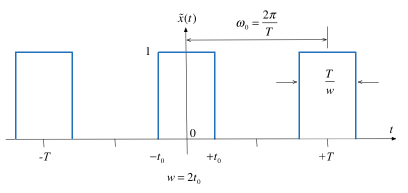

Worksheet 12¶
To accompany Chapter 5.1 Defining the Fourier Transform¶
Colophon¶
This worksheet can be downloaded as a PDF file. We will step through this worksheet in class.
An annotatable copy of the notes for this presentation will be distributed before the second class meeting as Worksheet 12 in the Week 6: Classroom Activities section of the Canvas site. I will also distribute a copy to your personal Worksheets section of the OneNote Class Notebook so that you can add your own notes using OneNote.
You are expected to have at least watched the video presentation of Chapter 5.1 of the notes before coming to class. If you haven’t watch it afterwards!
After class, the lecture recording and the annotated version of the worksheets will be made available through Canvas.
Fourier Transform as the Limit of a Fourier Series¶
We start by considering the pulse train that we used in the last lecture and demonstrate that the discrete line spectra for the Fourier Series becomes a continuous spectrum as the signal becomes aperiodic.
This analysis is from Boulet pp 142—144 and 176—180.
Let \(\tilde x(t)\) be the Fourier series of the rectangular pulse train shown below:
Fourier Series¶
In the previous section we used
to compute the line spectra.
From the Time Point of View¶
If we instead take a time point-of-view and let \(A = 1\)
Let’s complete the analysis in the whiteboard.
The Sinc Function¶
The function, \(\sin(\pi x)/\pi x\) crops up again and again in Fourier analysis. The Fourier coefficients \(C_k\) are scaled samples of the real continuous normalized sinc function defined as follows:
The function is equal to 1 at \(u=0\)1 and has zero crossings at \(u=\pm n,\; n=1,2,3,\ldots\) as shown below.
Plot the sinc function¶
Plots:
x = linspace(-5,5,1000);
plot(x,sin(pi.*x)./(pi.*x))
grid
title('Graph of sinc function')
ylabel('sinc(u)')
xlabel('u')

Duty cycle¶
We define the duty cycle \(\eta = 2t_0/T\) of the rectangular pulse train as the fraction of the time the signal is “on” (equal to 1) over one period.
The duty cycle is often given as a percentage.
The spectral coefficients expressed using the normalized sinc function and the duty cycle can be written as
Normalize the spectral coefficients¶
Let us normalize the spectral coefficients of \(\tilde x(t)\) by mutiplying them by \(T\), and assume \(t_0\) is fixed so that the duty cycle \(\eta = 2t_0/T\) will decrease as we increase \(T\):
Then the normalized coefficents \(T C_k\) of the rectangular wave is a sinc envelope with constant amplitude at the origin equal to \(2t_0\), and a zero crossing at fixed frequency \(\pi/t_0\) rad/s, both independent of \(T\).
open duty_cycle
Demo
Run duty_cycle with values of:
50% (\(\eta = 1/2\))
25% (\(\eta = ?\))
12.5% (\(\eta = ?\))
5% (\(\eta = ?\))
Comments¶
As the fundamental period increases, we get more spectral lines packed into the lobes of the sinc envelope.
These normalized spectral coefficients turn out to be samples of the continuous sinc function on the spectrum of \(\tilde{x}(t)\)
The two spectra are plotted against the frequency variable \(k\omega_0\) with units of rad/s rather than index of harmonic component
The first zeros of each side of the main lobe are at frequencies \(\omega = \pm \pi/t_0\) rad/s
The zero-crossing points of sinc envelope are independent of the period T. They only depend on \(t_0\).
Intuition leading to the Fourier Transform¶
An aperiodic signal that has been made periodic by “repeating” its graph every \(T\) seconds will have a line spectrum that becomes more and more dense as the fundamental period is made longer and longer.
The line spectrum has the same continuous envelope.
As \(T\) goes to infinity, the line spectrum will become a continuous function of \(\omega\).
The envelope is this function.
Doing the Maths¶
See the notes.
Inverse Fourier Transform:
Similarly, given the expression we have already seen for an arbitrary \(x(t)\):
Fourier Transform:
Fourier Transform Pair¶
The two equations on the previous slide are called the Fourier transform pair.
Properties of the Fourier Transform¶
Again, we will provide any properties that you might need in the examination.
You will find a number of these in the accompanying notes.
Table of Properites of the Fourier Transform¶
As was the case of the Laplace Transform, properties of Fourier transforms are usually summarized in Tables of Fourier Transform properties. For example this one: Properties of the Fourier Transform (Wikpedia) and Table 8.8 in Karris (page 8-17).
More detail and some commentry is given in the printable version of these notes.
| Name | $f(t)$ | $F(j\omega)$ | Remarks | |
| 1 | Linearity | $a_1f_1(t)+a_2f_2(t)+\cdots+a_nf_n(t)$ | $a_1F_1(j\omega)+a_2F_2(j\omega)+\cdots+a_nF_n(j\omega)$ | Fourier transform is a linear operator. |
| 2 | Symmetry | $2\pi f(-j\omega)$ | $F(t)$ | |
| 3. | Time and frequency scaling | $f(\alpha t)$ | $$\frac{1}{|\alpha|}F\left(j\frac{\omega}{\alpha}\right)$$ | time compression is frequency expansion and *vice versa* |
| 4. | Time shifting | $$f(t-t_0)$$ | $$e^{-j\omega t_0}F(j\omega)$$ | A time shift corresponds to a phase shift in frequency domain |
| 5. | Frequency shifting | $$e^{j\omega_0 t}f(t)$$ | $$F(j\omega-j\omega_0)$$ | Multiplying a signal by a complex exponential results in a frequency shift. |
| 6. | Time differentiation | $$\frac{d^n}{dt^n}\,f(t)$$ | $$(j\omega)^nF(j\omega)$$ | |
| 7. | Frequency differentiation | $$(-jt)^n f(t)$$ | $$\frac{d^n}{d\omega^n}F(j\omega)$$ | |
| 8. | Time integration | $$\int_{-\infty}^{t}f(\tau)d\tau$$ | $$\frac{F(j\omega)}{j\omega}+\pi F(0)\delta(\omega)$$ | |
| 9. | Conjugation | $$f^*(t)$$ | $$F^*(-j\omega)$$ | |
| 10. | Time convolution | $$f_1(t)*f_2(t)$$ | $$F_1(j\omega) F_2(j\omega)$$ | Compare with Laplace Transform |
| 11. | Frequency convolution | $$f_1(t)f_2(t)$$ | $$\frac{1}{2\pi} F_1(j\omega)*F_2(j\omega)$$ | This has application to amplitude modulation as shown in Boulet pp 182—183. |
| 12. | Area under $f(t)$ | $$\int_{-\infty}^{\infty} f(t)\,dt = F(0)$$ | Way to calculate DC (or average) value of a signal | |
| 13. | Area under $F(j\omega)$ | $$f(0) = \frac{1}{2\pi}\int_{-\infty}^{\infty} F(j\omega)\,d\omega$$ | ||
| 14. | Energy-Density Spectrum | $$E_{[\omega_1,\omega_2]}:=\frac{1}{2\pi}\int_{\omega_1}^{\omega_2}|F(j\omega)|^2\,d\omega.$$ | ||
| 15. | Parseval's theorem | $$\int_{-\infty}^{\infty}|f(t)|^2\,dt=\frac{1}{2\pi}\int_{-\infty}^{\infty}|F(j\omega)|^2\,d\omega.$$ | Definition RMS follows from this |
See also: Wikibooks: Engineering Tables/Fourier Transform Properties and Fourier Transfom—WolframMathworld for more complete references.
Examples¶
Amplitude Modulation
Impulse response
Energy computation
Example 1: Amplitude Modulation¶
Compute the result of multiplying a signal \(f(t)\) by a carrier waveform \(\cos \omega_c t\).
Hint use Euler’s identity and the frequency shift property
Example 2: Impulse response¶
A system has impulse response \(f(t) = e^{-t}u_0(t)\). Compute the frequency sprectrum of this system.
Example 3: Energy computation¶
An aperiodic real signal \(f(t)\) has Fourier transform \(F(j\omega)\). Compute the energy contained the signal between 5kHz and 10kHz.
Computing Fourier Transforms in Matlab¶
MATLAB has the built-in fourier and ifourier functions that can be used to compute the Fourier transform and its inverse. We will explore some of thes in the next lab.
For now, here’s an example:
Example¶
Use Matlab to confirm the Fourier transform pair:
syms t v omega x;
ft = exp(-t^2/2);
Fw = fourier(ft,omega)
pretty(Fw)
Check by computing the inverse using ifourier
ft = ifourier(Fw)